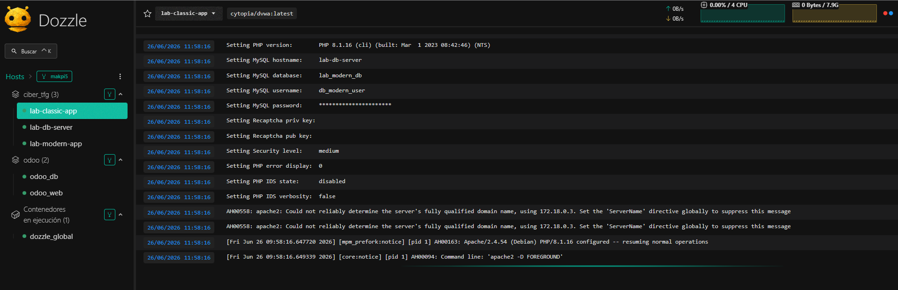
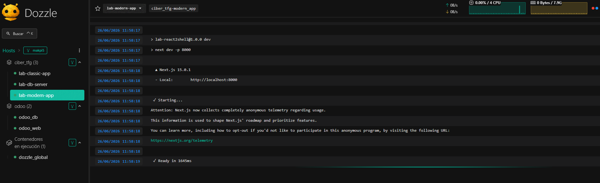
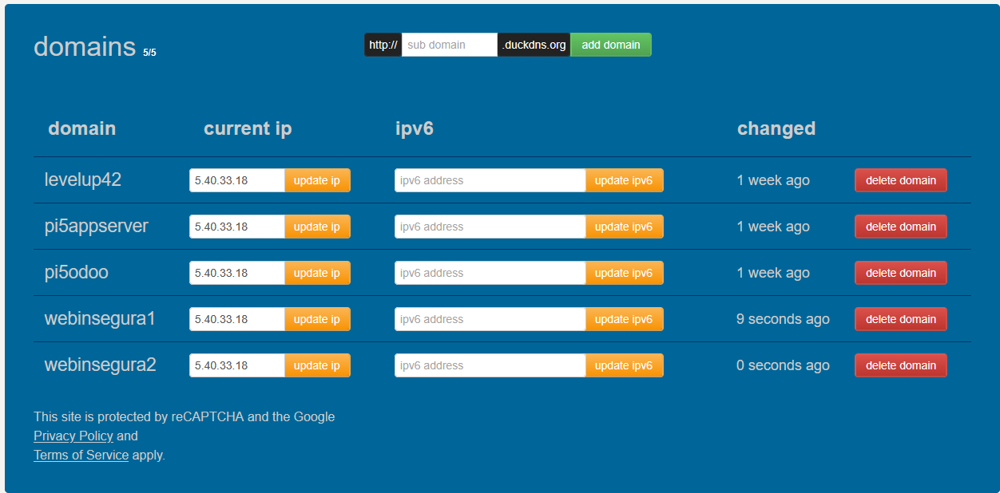
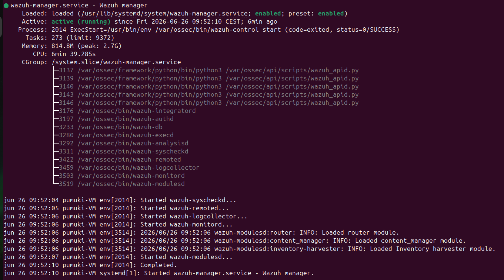

Levantamiento del laboratorio
Documento web del despliegue real del laboratorio
Esta página traslada a formato web el contenido de tfg.md tal y como quedó documentado: desde la topología con Docker y Apache hasta el acceso por DuckDNS, el control por IP y la instalación del agente Wazuh.
Topología de entrada
Esquema WAN con Apache2 nativo como puerta de entrada y publicación de los subdominios de prueba.
[ KALI LINUX ]
│ (Internet / WAN)
▼
[ APACHE2 Nativo (Host) Puerto 80/443 ]
(Filtra por IP y hace Reverse Proxy)
│
┌───────────────────────┴───────────────────────┐
▼ (Red de Docker) ▼ (Red de Docker)
[ Contenedor: modern_app ] [ Contenedor: classic_app (DVWA) ]
(webinsegura1.duckdns.org) (webinsegura2.duckdns.org)Configuración docker-compose.yml
Se elimina el proxy intermedio de Docker y se publican los servicios vulnerables en puertos locales altos para que Apache reenvíe el tráfico.
networks:
lab_net:
driver: bridge
services:
db_server:
image: mariadb:10.11
container_name: lab-db-server
restart: always
networks:
- lab_net
environment:
MYSQL_ROOT_PASSWORD: RootSecurePassword2026_Unused
MYSQL_DATABASE: lab_modern_db
MYSQL_USER: db_modern_user
MYSQL_PASSWORD: InsecureAIPassword_123
volumes:
- db_data:/var/lib/mysql
modern_app:
build: ./modern_app # Construye la imagen vulnerable localmente
container_name: lab-modern-app
restart: always
ports:
- "127.0.0.1:8081:8000" # Expuesto internamente para Apache en el 8081
networks:
- lab_net
environment:
DB_HOST: lab-db-server
DB_USER: db_modern_user
DB_PASS: InsecureAIPassword_123
DB_NAME: lab_modern_db
NODE_ENV: development
classic_app:
image: cytopia/dvwa:latest # Imagen nativa compatible con ARM64 (Raspberry Pi 5)
container_name: lab-classic-app
restart: always
ports:
- "127.0.0.1:8082:80" # Expuesto internamente para Apache en el 8082
networks:
- lab_net
environment:
DBMS: MySQL
DB_SERVER: lab-db-server
MYSQL_HOSTNAME: lab-db-server
MYSQL_USERNAME: db_modern_user
MYSQL_PASSWORD: InsecureAIPassword_123
MYSQL_DATABASE: lab_modern_db
volumes:
db_data:Nota: al mapear los puertos como 127.0.0.1:8081 se evita que nadie en internet ataque los puertos de Docker directamente.
alpine:18 y React con React2Shell (CVE-2025-55182 / CVE-2025-66478).
{
"name": "lab-react2shell",
"version": "1.0.0",
"private": true,
"scripts": {
"dev": "next dev -p 8000"
},
"dependencies": {
"react": "19.0.0",
"react-dom": "19.0.0",
"react-server-dom-webpack": "19.0.0",
"next": "15.0.1"
}
}
Una vez levantado el entorno con docker-compose, validamos que los contenedores del motor de base de datos MariaDB (lab-db-server), la aplicación moderna Next.js vulnerable (lab-modern-app) y la aplicación clásica DVWA (lab-classic-app) están arriba y estables:

A continuación, se detallan las capturas del estado y logs de inicialización individuales de cada servicio (DVWA, base de datos y la aplicación vulnerable moderna), que demuestran la inicialización correcta de cada componente de manera independiente dentro de Docker:



FROM node:18-alpine
WORKDIR /app
COPY package*.json ./
RUN npm install --legacy-peer-deps
COPY . .
EXPOSE 8000
CMD ["npm", "run", "dev"]Errores críticos detectados en el despliegue inicial
Fallo de arquitectura en DVWA. exec /main.sh: exec format error al ejecutar la imagen vulnerables/web-dvwa:latest sobre la arquitectura ARM64 de la Raspberry Pi 5. Se solucionó migrando a la imagen cytopia/dvwa:latest con soporte nativo multiplataforma.
Fallo de estructura en Next.js. ENOENT: no such file or directory, open '/app/package.json' debido a que la imagen base de Node arrancaba limpia sin un proyecto inicializado. Se corrigió creando un Dockerfile localizado para compilar la imagen.
ERESOLVE en Next.js. Conflicto de dependencias resuelto mediante la inyección del flag npm install --legacy-peer-deps para forzar el entorno vulnerable a React2Shell.
Variables de entorno DVWA. Se remapeó la configuración para utilizar las claves obligatorias MYSQL_HOSTNAME y MYSQL_USERNAME requeridas por la nueva imagen de DVWA.
Subdominios y captura de DuckDNS
La vinculación de las apps se documenta con los subdominios webinsegura1.duckdns.org y webinsegura2.duckdns.org. La imagen siguiente corresponde a la captura referenciada en el documento original.

Apache: IP permitida y VirtualHost
Se crea el archivo de configuración para la IP autorizada y se habilitan los módulos necesarios antes de definir los VirtualHost para cada subdominio.
Define ALLOWED_ATTACKER_IP 1.2.3.4# Incluimos el archivo que contiene la IP del atacante
Include /etc/apache2/allowed_ip.conf
ServerName webinsegura1.duckdns.org
SSLEngine on
SSLCertificateFile /etc/letsencrypt/live/webinsegura1.duckdns.org/fullchain.pem
SSLCertificateKeyFile /etc/letsencrypt/live/webinsegura1.duckdns.org/privkey.pem
ServerName webinsegura2.duckdns.org
SSLEngine on
SSLCertificateFile /etc/letsencrypt/live/webinsegura2.duckdns.org/fullchain.pem
SSLCertificateKeyFile /etc/letsencrypt/live/webinsegura2.duckdns.org/privkey.pem
sudo a2enmod proxy proxy_http headers rewrite se habilita la publicación de los subdominios y el filtrado por IP.
sudo a2ensite tfg_vulnerable.conf
sudo systemctl restart apache2Errores y soluciones en Proxy y Certificados
Bloqueo interactivo de Certbot. Se canceló el asistente y se generaron los certificados con certonly --webroot.
Fuga de información en el puerto 80. Se añadieron bloques <VirtualHost *:80> específicos para devolver 403 Forbidden antes de redirigir a HTTPS.
Ruta única de certificados. Se configuró Apache para apuntar a la ruta unificada de webinsegura1.duckdns.org cuando el alta conjunta dejó ambos certificados en el mismo directorio.
Script de Python para cambiar la IP de forma remota
El script actualiza la IP permitida en Apache, valida la sintaxis y recarga el servicio sin cortar conexiones activas.
import re
import os
import sys
import subprocess
CONFIG_PATH = "/etc/apache2/allowed_ip.conf"
def validate_ip(ip):
match = re.match(r"^(\d{1,3})\.(\d{1,3})\.(\d{1,3})\.(\d{1,3})$", ip)
if not match:
return False
return all(0 <= int(component) <= 255 for component in match.groups())
def main():
if os.geteuid() != 0:
print("[-] Este script debe ejecutarse con privilegios de root (sudo).")
sys.exit(1)
new_ip = input("[+] Introduce la IP pública de tu Kali Linux: ").strip()
if not validate_ip(new_ip):
print("[-] Error: El formato de la IP no es válido.")
sys.exit(1)
try:
with open(CONFIG_PATH, "w") as f:
f.write(f"Define ALLOWED_ATTACKER_IP {new_ip}\n")
print(f"[+] Archivo {CONFIG_PATH} actualizado con la IP: {new_ip}")
print("[*] Validando configuración de Apache...")
result = subprocess.run(["apache2ctl", "configtest"], capture_output=True, text=True)
if "Syntax OK" in result.stderr or "Syntax OK" in result.stdout:
subprocess.run(["systemctl", "reload", "apache2"])
print("[+] Apache recargado con éxito. ¡Acceso permitido para tu Kali!")
else:
print("[-] Error de sintaxis en Apache detectado. Revierte los cambios.")
print(result.stderr)
except Exception as e:
print(f"[-] Ocurrió un error inesperado: {e}")
if __name__ == "__main__":
main()sudo python3 update_ip.pywebinsegura1.duckdns.org resuelve en React2Shell y webinsegura2.duckdns.org muestra el login de DVWA; cualquier petición fuera de la IP registrada devuelve 403 Forbidden.
Instalación y configuración del agente Wazuh
Este bloque continúa el levantamiento del laboratorio con la monitorización de la Raspberry Pi 5 como agente nativo ARM64.
1. Firma y repositorios oficiales
# Importar clave GPG oficial
curl -s https://packages.wazuh.com/key/GPG-KEY-WAZUH | sudo gpg --no-default-keyring --keyring gnupg-ring:/usr/share/keyrings/wazuh.gpg --import
sudo chmod 644 /usr/share/keyrings/wazuh.gpg
# Indexar el repositorio en las fuentes del sistema
echo "deb [signed-by=/usr/share/keyrings/wazuh.gpg] https://packages.wazuh.com/4.x/apt/ stable main" | sudo tee /etc/apt/sources.list.d/wazuh.list
sudo apt update2. Despliegue orientado al Manager
sudo WAZUH_MANAGER='IP_DE_LA_VM_DEBIAN' apt-get install wazuh-agent3. Auditoría y enlace de comunicación
sudo nano /var/ossec/etc/ossec.conf
<client>
<server>
<address>IP_LOCAL_DE_LA_VM_DEBIAN</address>
<port>1514</port>
<protocol>tcp</protocol>
</server>
</client>4. Gestión del demonio del sistema
sudo systemctl daemon-reload
sudo systemctl enable wazuh-agent
sudo systemctl start wazuh-agent5. Diagnóstico de conexión
sudo systemctl status wazuh-agent
sudo tail -n 20 /var/ossec/logs/ossec.log | grep -E "agentd|connected|status"Tras habilitar e iniciar el demonio en la Raspberry Pi 5, verificamos el arranque exitoso de sus módulos locales de monitorización para descartar errores en el arranque:

Paralelamente, verificamos el estado general y el arranque de todos los componentes distribuidos dentro del servidor Ubuntu donde se aloja el Wazuh Manager centralizado:

Una vez levantado el agente en el nodo de escucha local, la conexión TLS mutua (cifrada en el puerto 1514) se realiza de forma automática. Desde el panel central se visualiza que la Raspberry Pi 5 se ha enlazado de forma segura y se encuentra en estado activo de monitorización.

Ampliación de Configuración de Registros de Wazuh
Para que los ataques ofensivos perimetrales e intentos de inyección web dirigidos a la aplicación vulnerable queden registrados correctamente en los paneles de análisis del SOC, es crucial ampliar la telemetría por defecto del Wazuh Manager y configurar reglas específicas de severidad crítica.
Resolución de Incidencias Técnicas Previas
Durante el despliegue del sistema de logs, se solventaron dos bloqueos en la infraestructura del gestor de logs (Filebeat):
1. Ausencia del Bloque archives. La plantilla original de Filebeat carecía de la sección de archivo histórico general. Se forzó la declaración directa de la directiva de Wazuh habilitando archives.enabled: true en /etc/filebeat/filebeat.yml.
2. Corrupción de archivo por bloqueo CDN S3. Una descarga con curl fallida debido a políticas XML restrictivas (Access Denied) en la CDN sobreescribió Filebeat. Se reescribió y configuró manualmente una plantilla compatible de un solo nodo.
Paso 1: Habilitación de Archives en Wazuh Manager
Por motivos de espacio en disco, Wazuh oculta logs que no coinciden con alertas. Para registrar toda la actividad perimetral (como escaneos silenciosos), se activa el archivado JSON general:
sudo nano /var/ossec/etc/rules/local_rules.xmlModificación de /var/ossec/etc/ossec.conf para forzar la salida de logs completos en JSON:
<global>
<jsonout_output>yes</jsonout_output>
<alerts_log>yes</alerts_log>
<logall>no</logall>
<logall_json>yes</logall_json>
</global>
Paso 2: Reconstrucción y Hardening de Filebeat
Declaración e ingesta del archivo de alertas y archives JSON mediante /etc/filebeat/filebeat.yml:
filebeat.modules:
- module: wazuh
alerts:
enabled: true
archives:
enabled: true # Requerido para ingestar logs de escaneos y auditoría
output.elasticsearch:
hosts: ["https://127.0.0.1:9200"]
protocol: "https"
username: "admin"
password: "SecretPassword"
ssl.certificate_authorities: ["/etc/filebeat/certs/root-ca.pem"]
ssl.certificate: "/etc/filebeat/certs/wazuh-server.pem"
ssl.key: "/etc/filebeat/certs/wazuh-server-key.pem"
setup.template.json.enabled: true
setup.template.json.path: "/etc/filebeat/wazuh-template.json"
setup.template.json.name: "wazuh"
setup.template.overwrite: true
setup.ilm.enabled: false
logging.level: info
logging.to_files: true
logging.files:
path: /var/log/filebeat
name: filebeat
keepfiles: 7
permissions: 0644
seccomp:
default_action: allowVerificación y reinicio del servicio:
sudo filebeat test config
# Si devuelve "Config OK"
sudo systemctl restart filebeatPaso 3: Creación de Reglas de Seguridad Personalizadas en local_rules.xml
Se añaden firmas específicas en el Manager para decodificar los logs en formato JSON generados por el servidor web y activar alarmas de severidad máxima cuando se explota el exploit React2Shell (CVE-2025-55182).
<group name="nextjs_security,">
<rule id="100500" level="0">
<decoded_as>json</decoded_as>
<field name="source">app_server</field>
<description>Evento de telemetría de seguridad generado por Next.js.</description>
</rule>
<rule id="100503" level="14">
<if_sid>100500</if_sid>
<match>node:child_process|execSync|Flight-Protocol</match>
<description>Severidad Crítica: Explotación React2Shell detectada (CVE-2025-55182).</description>
</rule>
<rule id="100504" level="14">
<if_sid>100500</if_sid>
<match>malicious_input_detected</match>
<description>Severidad Crítica: Intento de intrusión detectado por la aplicación (React2Shell).</description>
</rule>
</group>
Paso 4: Configuración de Monitorización en la Raspberry Pi 5
Para que el agente de seguridad escuche e ingeste los logs generados dentro del volumen de Docker, se añaden las directivas específicas de recolección en el archivo ossec.conf del agente:
<ossec_config>
<localfile>
<log_format>apache</log_format>
<location>/var/log/nginx/access.log</location>
</localfile>
<localfile>
<log_format>json</log_format>
<location>/var/log/app/security.json</location>
<label key="app.name">nextjs_vulnerable</label>
</localfile>
</ossec_config>
Reinicio del servicio para aplicar los cambios del demonio del agente:
sudo systemctl restart wazuh-agentPaso 5: Validación de Reglas con wazuh-logtest
Para probar que la decodificación y el disparo de las alertas críticas de severidad 14 funcionan adecuadamente antes de detonar el ataque real, se utiliza el binario de diagnóstico local en el servidor del Manager:
sudo /var/ossec/bin/wazuh-logtestSe introduce el siguiente payload simulado de ataque en formato JSON:
{"source":"app_server","context":"rsc_deserialization","status":"malicious_input_detected","input_received":"1:I","error_message":"Intento de inyección de módulo crítico detectado."}
El test de logs verifica que el parseador JSON reconoce de forma limpia los campos, mapeando la expresión regular al CVE correspondiente y confirmando que el SIEM generará la alerta crítica al momento de la explotación perimetral ofensiva.
Resolución de Incidencias de Reglas Personalizadas
Error de validación en wazuh-analysisd. Durante el aprovisionamiento de las alertas en local_rules.xml, el servicio del wazuh-manager colapsaba en el arranque indicando: ERROR: Failure to read rule 100504. Field 'status' is static.
Causa raíz: El motor del validador de Wazuh clasifica como "estático" el mapeo directo de un campo JSON ya decodificado (<field name="status">) al usar reglas secundarias asociadas a un <if_sid>.
Solución implementada: Se realizó la transición desde la estructura de correspondencia de campos directos hacia el uso de <match>malicious_input_detected</match>. Esto permite al motor realizar una comprobación por patrones en todo el evento sin restricción de tipo, logrando una carga correcta.